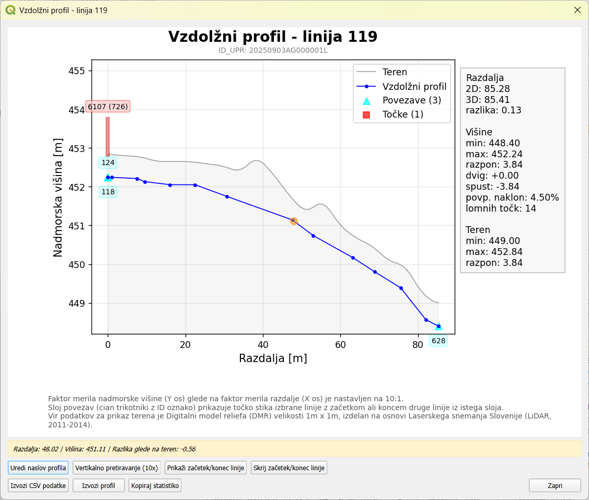

Akcije so posebni postopki za hitro izvedbo določenih nalog vezanih na podatke v projektu. Delimo jih na akcije za posamezen sloj in
na akcije za posamezni element določenega sloja.
Na voljo za sloje iz elaborata: Točke, Linije in Poligoni.
Akcija izpiše polja in vrednosti, ki so bila spremenjena glede na stanje v bazi (t.j. v zbirnem katastru GJI). Deluje za elemente, ki imajo
tip spremembe S ali B.
Akcija v samostojnem oknu prikaže interaktivni vzdolžni (višinski) profil izbrane linije z naborom dodatnih informacij in možnosti.
Horizontalna os (X) prikazuje razdaljo linije, vertikalna os (Y) pa nadmorsko višino.

Primer vzdolžnega profila linije (trase) v zemlji
Vsebina profila:
Modra linija - višinski profil linije z označenimi lomnimi točkami
Siva polnitev - digitalni model reliefa (DMR s celico 1m x 1m)
Cian trikotniki - točke stika z drugimi linijami
Rdeči pravokotniki - točkovni objekti na liniji z ustrezno višino na podlagi Z koordinate in polja DIM_Z.
Statistika:
razdalja linije (2D, 3D, razlika)
višinske točke linije (minimum, maksimum, razpon, dvig, spust, povprečni naklon, število lomnih točk)